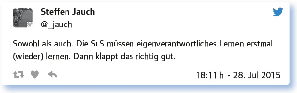
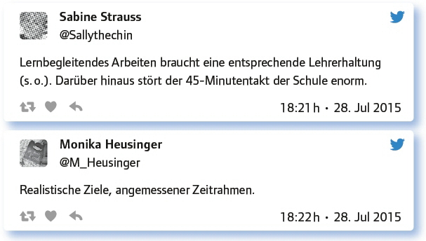
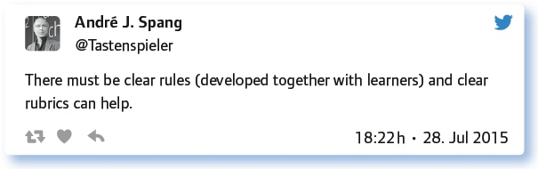
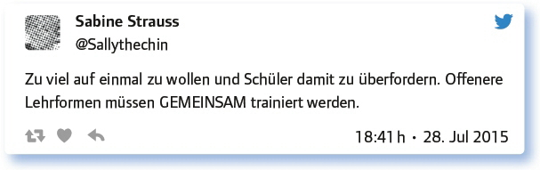
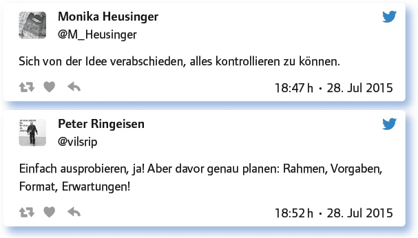

5.4
Lehrer oder Lernbegleiter: Kontrollverlust als Programm (#EDchatDE Summer-Special vom 28. Juli 2015)
von Elke Höfler
Welche Rolle spielen Lehrerkräfte heutzutage? Sind sie Lehrer oder Lernbegleiter? Diesen und ähnlichen Fragen wurde im Summer-Special nachgegangen, das von Herrn B. (@legere- aude) und Sabine Strauss (@Sallythechin) moderiert wurde.
Lehrer oder Lernbegleiter: Was ist der Unterschied? Ist eine bestimmte Haltung zum Lehren notwendig?
Gleich zu Beginn wurden einander die unterschiedlichen Begriffe, Konzepte oder Überlegungen gegenübergestellt. Für die Teilgeber war hier kein sich ausschließender Gegensatz (ein Entweder-oder), sondern vielmehr ein sich ergänzendes Sowohl-als-auch der Grundtenor:
Lehrer ist eine Berufsbezeichnung, Lernbegleiter ist ein Konzept.
Überspitzt: Lernbegleiter begleitet selbstständig Lernende. Lehrer lehrt, während Lerner zumeist extrinsisch motiviert lernen.
Als Lernbegleiter sollte man stets auf der Höhe des Geschehens sein und trotzdem Kontrolle abgeben können.
Ich finde, dass diese Unterscheidung nur polarisiert und Fronten schafft. Ein guter Lehrer war schon immer auch Lernbegleiter.
It is all about relationships – not content delivery. I think you have to be both – teacher & coach & find your own real thing.
Kontrollverlust in der Schule: Welche Erfahrungen habt ihr mit eigenverantwortlichem Arbeiten gemacht? (Gerne mit Links)
Vielfach wird die Rolle des Lernbegleiters oder der Lernbegleiterin auch mit einem Verlust der Kontrolle innerhalb des Klassenzimmers gesehen. Die Teilgeber sehen diese Gleichsetzung kritisch, betrachten Lerner auch als Lehrende (Lernen durch Lehren, LdL):
Ich verliere die Kontrolle nicht, sondern delegiere sie (LdL): Schüler übernehmen die Kontrolle – ich bin für die Richtigkeit verantwortlich.
Kontrollverlust für Lehrer bedeutet, dass SuS die Kontrolle übernehmen. Super. Verantwortung zu übernehmen lernt man nur so.
Eigenverantwortliches Arbeiten bedeutet doch nicht „Kontrollverlust“. – Gerade dann muss ich den Rahmen kontrollieren.
We’re scaring lots of teachers out there who think control is everything. IMHO learning space must be co-created.
Um zu reüssieren, müssen die Schüler (SuS) das eigenverantwortliche Lernen jedoch (wieder) erlernen oder trainieren:

Formen autonomer Arbeit: Welche Formen autonomer Arbeit kennt ihr (Projekt etc.)?
Zahlreiche Formen und methodische Zugänge wurden aufgezählt, die im ausführlichen Protokoll auch mit Links und weiterführenden Informationen nachzulesen sind. Lernen durch Lehren (LdL) war einer der meist genannten Ansätze, genannt wurden aber auch: aufgabenorientiertes Arbeiten, Freiarbeit, Gruppenpuzzle, Lernen an Stationen, Lerntheke, Lernwerkstatt, Projektarbeit, Selbstorganisiertes Lernen (SOL), Wochenplanarbeit und Portfolioarbeit. Doch auch kritische Stimmen zum autonomen Lernen wurden laut:
Führung ohne Führung: Welche Voraussetzungen braucht lernbegleitendes Arbeiten?
Will man als Lernbegleiter/in agieren, müssen auch die Rahmenbedingungen und die Vorgaben stimmen oder angepasst werden:

Klarheit und Transparenz wurden an mehreren Stellen und auf unterschiedlichen Ebenen betont und in ihrer Wichtigkeit herausgehoben:

Doch auch Werthaltungen (auch im Sinne einer Rahmenbedingung), Kompetenzen und veränderte Rollenbilder wurden im Zuge der Diskussion angesprochen:
Vertrauen und Wertschätzung
Methodenkompetenz seitens der Lernenden, sorgfältiges Prüfen der Lernvoraussetzungen seitens der Lehrperson.
Verdammt viel Feingefühl, um an den richtigen Momenten das Richtige zu sagen/machen, ohne wieder ins alte Muster zu verfallen.
Antworte auf 3 Tweets unterschiedlicher Teilgeberinnen a) zustimmend, b) kritisch, c) provozierend!
Gerade die Freiheit, selbst also autonom zu entscheiden, wurde, ausgelöst durch folgenden Tweet, stark diskutiert:
Digitale Arbeit: Wie kann digitales Arbeiten Selbstständigkeit fördern?
Erleichtern oder fördern digitale Medien das selbstständige Arbeiten oder die Selbstständigkeit? Sollen wir selbstständig sein oder das Teamplay lernen? Diesen Aspekten ging diese Frage nach:
Indem produktive, konnektivistische Arbeit und nicht ausschließlich Internetrecherche gefordert/gefördert wird.
Die Suche nach Material wird durchs Digitale sicher leichter. Aber wieso immer „Selbst“ständigkeit? Kollaboratives Arbeiten muss gefördert werden.
Digitale Medien erleichtern, so ein Diskussionsstrang, die Kommunikation und Kollaboration bzw. Interaktion in großen Gruppen und über geografische Distanzen hinweg. Sie erweitern den physischen und virtuellen Lernraum:
Digitale Medien erleichtern mir Kommunikation (und auch Kontrolle), wenn SuS sich auf mehrere Räume verteilen.
Digitale Medien sind eine Erweiterung des Lernraums ins Virtuelle.
Hand auf’s Herz: Was kann schief gehen, was ist schon schief gegangen? Wie reagieren?
Einige Erfahrungsberichte zeigten, dass das Zuviel an Medien, Methoden oder Inhalten zu einer Überforderung führen kann, die wiederum für den Lernprozess und die Motivation hinderlich ist:

Auf den Punkt bringt es aber Peter Ringeisen (@vilsrip) mit folgendem Tweet:
Welche Anregungen, Fragen hast du sonst noch zum Thema?
Zwei Anregungen sollen hier aus einer Fülle von Ideen herausgegriffen werden, die quasi auch den Grundtenor dieser Ausgabe bildeten: der Ruf nach Mut und nach einem Umdenken:

Die Diskussion im Summer-Special polarisierte von Anfang an, wenngleich man im Kern einig zu sein schien: Lehrer und Lernbegleiter als Rollen schließen einander nicht aus. Deutlich zeigte sich, welche Hürden beim eigenverantwortlichen Lernen und lernbegleitenden Arbeiten zu nehmen sein können und dass vor allem die Rahmenbedingungen stimmen sollten, um Selbstbestimmung zu ermöglichen. Darüber hinaus wurde klar, dass der Mut zum offenen Arbeiten vorhanden sein sollte und der „Verlust“ von Kontrolle ein Gewinn sein kann. Scheitern, Ausprobieren und Aus-Fehlern-Lernen sollte dabei sowohl den Lernenden als auch den Lehrenden zugestanden werden (dürfen).
Weiterführende Informationen:
Link zum vorbereitenden Google Doc: https://docs.google.com/document/d/1pbmcAM1i0Xku4FfNy4NSuS0AIGcJ2lVsh_ndouV6724/edit?usp=sharing
Link zum vollständigen Protokoll: